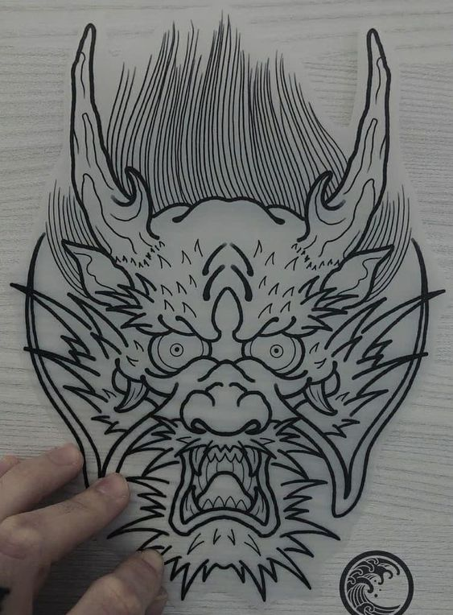

Tattoo Uruguay
El arte del tatuaje ha experimentado un crecimiento significativo en Uruguay, convirtiéndose en una forma popular de expresión artística y personal. A lo largo de las últimas décadas, los tatuajes han dejado de ser simplemente símbolos marginales para convertirse en una manifestación respetada y aceptada en la sociedad uruguaya. En Uruguay, los tatuajes han evolucionado desde tradiciones indígenas y culturas ancestrales hasta una forma de arte moderna influenciada por diversas corrientes estilísticas. Tanto jóvenes como adultos buscan tatuajes que reflejen sus personalidades, experiencias de vida o simplemente sirvan como una declaración de estilo. Los estudios de tatuajes en Uruguay han experimentado un auge considerable, ofreciendo a los entusiastas una amplia gama de artistas talentosos y especializados. Montevideo, la capital, es un centro vibrante de la escena del tatuaje, con estudios que van desde los tradicionales hasta los más contemporáneos. La diversidad de estilos, desde el realismo hasta el estilo geométrico, brinda a los clientes la oportunidad de encontrar un artista que se adapte a sus preferencias estéticas. La aceptación social de los tatuajes en Uruguay ha crecido, y cada vez es más común ver a personas de todas las edades y profesiones luciendo con orgullo sus tatuajes. Esto refleja una sociedad que valora la individualidad y la expresión personal, reconociendo que los tatuajes pueden ser obras de arte significativas y no simplemente actos de rebeldía. Además, los tatuajes en Uruguay a menudo se asocian con la conmemoración de momentos importantes, como fechas especiales, logros personales o recordatorios de seres queridos. Esta conexión emocional hace que los tatuajes sean más que simples adornos en la piel; se convierten en símbolos vivos de la historia y la identidad de cada individuo. En resumen, el tatuaje en Uruguay ha experimentado una evolución notable, pasando de ser estigmatizado a ser celebrado como una forma respetada de arte y expresión personal. La escena del tatuaje en el país refleja la rica diversidad de estilos y la aceptación social creciente de esta forma única de manifestación artística.
Mis Trabajos